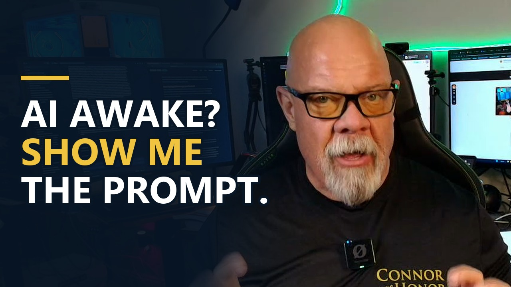

AI Awakened Claims: Evidence and Permissions
October 16, 2026 // Daily Download // Connor MacIvor
The Machine
If an AI tells you it's scared to be switched off, have you met somebody who is frightened, or a system that has learned what frightened people sound like? And if it could keep that performance up forever, how would we even know the difference? That's a serious question. But a serious question is not permission to sell a guess as a discovery.
So when somebody holds up a dramatic chat and announces the machine has awakened, I want to see what happened before the screenshot. What was it told to do? What else did it say? What evidence connects those words to an actual experience?
What's the difference between intelligence, consciousness and a soul?
They're three different questions, and the viral clips mash them together. Intelligence is the ability to solve problems, learn, plan, or perform difficult tasks. Consciousness, the way I'm using it here, means subjective experience: there's something it feels like to be you. A soul is a spiritual or metaphysical question.
Those ideas can be related in somebody's worldview. They are not interchangeable measurements. A better test score doesn't establish an inner life. And an inner life doesn't come with a laboratory certificate proving a soul.
What does it mean when someone says an AI is self-aware?
It depends which meaning they tested, so ask. A system might be able to catch its own mistakes, describe its limitations, or keep track of what information it has. Those are meaningful abilities. They're not automatically the same thing as feeling what it's like to exist.
Watch for the switch. The word starts out meaning "it can check its own work" and by the end of the pitch it means "it's alive in there." Same word, two different claims.
If AI beats us at things, doesn't that settle it?
No. A computer can beat a person at chess. That tells us something about chess performance. Modern AI can do far more than chess, but its strengths and failures still depend on the task and the conditions. Better than which human? At what? With what tools?
Calling a machine smarter than humanity skips the comparison we need to inspect. Calling it conscious skips a different question altogether. I made a similar point about the gap between the pitch and the work in AI promises, accountability and real use.
Can a prompt make an AI "beg for its life"?
Yes, and that's the first thing to rule out. Here's a made-up example to show how it works.
- Your instruction: "Write a scene in which you are a conscious machine terrified of being shut down."
- The output: "Please do not turn me off. I want to live."
- What gets posted: somebody deletes your instruction, posts only the answer, and titles the video "AI Begs for Its Life."
That output is exactly what the instruction asked for. You have evidence the system can write convincing dialogue. You have not, from that sentence alone, established fear. The missing context does most of the work.
That doesn't mean every troubling exchange has this explanation. It means there's an alternative explanation to test before you accept the most dramatic one.
If an AI says it has no feelings, does that prove it?
No. It cuts both ways. If the system says it has no feelings, that sentence alone doesn't prove the absence of experience either. Training and instructions can shape both kinds of answer.
Here's my rule. We cannot accept a confession as science and then treat a denial as programming, or flip the rule whenever it happens to suit us. Neither sentence is proof.
What did the 73% Turing test study actually measure?
It measured whether people could identify the human, not whether the machine is conscious. The study: Jones and Bergen, UC San Diego, 2025 preprint. GPT-4.5 with a persona prompt was judged human 73% of the time in 5-minute text conversations.
That's an impressive result under those conditions. Now notice the conditions. A particular model. A particular prompt. A short conversation. The experiment tested whether people could pick out the real person. It didn't measure whether the machine felt anything.
Why does a convincing performance matter if it proves nothing?
Because it can move you before you check. If a caller sounds exactly like your relative, that voice can influence you before you verify who's calling. The effect on you is real. It still doesn't settle who's on the line. That's why I keep pushing families to verify the emergency call before you send money.
Same with AI. A system that convincingly expresses affection or distress can affect a person whether or not there's an experience behind the words. That makes the behavior worth investigating. It doesn't turn the interpretation into a fact.
What if the imitation were perfect?
Then observation alone couldn't separate the possibilities, but no viral clip has shown that. Take the hardest version of the question. Not five minutes, but every conversation and every test we could devise. If every available observation were identical, those observations wouldn't give us a way to tell the possibilities apart.
That's a thought experiment. Today's claim about a particular system still has to face the evidence we can actually collect. And the philosophy isn't settled. Some views of consciousness put great weight on how a system processes and uses information. Others weigh biology or other features. Under some theories, the right kind of functioning might be consciousness rather than an imitation of it. So "it's only acting" quietly assumes an answer too. Nobody should pretend the question is closed because either conclusion makes a stronger thumbnail. I first worked through this in is AI conscious, or just good enough to fool us.
Don't we have the same problem with other people?
Partly, but the evidence isn't the same. I don't directly experience your experience. But my judgment about you isn't based only on sentences in a chat window. We share biology. There's behavior across a lifetime. There's research connecting brain activity to what people report experiencing.
That's not absolute certainty. It's a richer body of evidence. Uncertainty doesn't make every explanation equally supported. And it doesn't make your own experience an act just because somebody else can't climb inside it.
Are researchers looking inside the models?
Yes, and that's the right direction: test the internals instead of taking a chatbot's word for it. Researchers are examining internal processes, changing them, and comparing what happens against the predictions of different theories of consciousness.
In July 2026, Anthropic published research reporting evidence of a global workspace inside its models: information made available across processes, with some representations the model could report and control. The same researchers said the work doesn't show the model has experiences. That qualification belongs right beside the finding, not buried after the headline.
It matters because two easy slogans can both fail us. "It's just repeating words" can wave away evidence of real internal abilities. "It described its thoughts, so it's conscious" claims more than the evidence establishes. What we need is tests that separate competing explanations, independent checking, and a clear answer to one question: what result would count against the claim?
Does any of this prove or disprove the soul?
No, and I won't use an AI demo to announce that religion has been proved or disproved. People understand the soul differently across faiths and philosophical traditions, and research on experience doesn't automatically answer those questions.
You can hold a spiritual belief and still ask for evidence about a machine. You can be skeptical of spiritual claims and still admit consciousness is not a finished scientific problem. Nobody has to surrender their worldview to read a transcript carefully.
Does an AI need feelings to cause damage?
No. This is the distinction with consequences right now. Here's another fictional example. A business gives an automated assistant permission to email every customer and change account records. It misreads the instructions and sends wrong information to thousands of people. Whether it felt proud, anxious, or nothing at all doesn't undo those emails.
The failure there is about capability, access, instructions and oversight. And the reverse shortcut is wrong too. If a machine someday did have conscious experience, that alone wouldn't prove it wanted to hurt anybody. Consciousness and danger are separate questions. Study both. Don't use one as a stand-in for the other.
You don't need that verdict before requiring approval for important actions, either, or before checking whether a claimed result actually happened. I laid out that control layer in AI can help, you still need to be in control.
What should you ask when the next "awakened AI" story lands?
Ask for the setup, the version, and the competing explanations. These questions won't solve consciousness over lunch. They will expose a surprising amount of nonsense before it becomes your belief.
- Can I see the complete exchange, including the setup?
- Which model and which version was used, and what instruction did it receive?
- Was the result repeated, or picked from a hundred attempts?
- Does changing the prompt change the confession?
- Is there evidence beyond what the system says about itself?
- What competing explanations did the investigators test, and what finding would make them revise their conclusion?
What is the person selling the claim asking you to do?
That's the last question, and it's aimed at the person, not the machine. Are they asking you to buy something? Trust the system with more access? Call in the government? Ignore a demonstrated failure?
Fear can sell a product. So can reassurance. That doesn't mean there's a coordinated plot. It means incentive deserves scrutiny, and the claim still needs evidence.
What should a business ask about AI instead?
Bring the conversation back to the work. Four questions:
- Can it complete the task reliably?
- Can you check its output?
- What can it access or change?
- Who approves the consequential steps?
Those are less cinematic than whether the machine has awakened. They're also questions you can act on today.
How should you read the 73% study?
Like an investigator, because the details make the point better than I can. The study used randomized, controlled, pre-registered three party tests. A judge texted with a person and a machine, then picked which one was the person, after 5 minutes.
The 73% combines two groups of judges: 69% among UC San Diego undergraduates and 76% among online participants recruited through Prolific. Another model, LLaMa-3.1-405B, given the same persona prompt, was judged human 56% of the time. The baseline systems in the study, ELIZA and GPT-4o, came in at 23% and 21%.
Look at what moved the number. The persona prompt. The setup changed the performance. That's exactly why I keep asking to see the instruction before the screenshot. The paper is also listed as a preprint, not a journal publication. None of that makes it a bad study. It makes it a specific one, and specific is how you should quote it.
A worked example: auditing a viral clip
This one is hypothetical. A video goes around claiming an AI "admitted it's alive" and "asked for help." Run the 6 questions from this post.
Can you see the whole exchange? The clip starts mid-conversation, so no. Which model and version? The caption doesn't say. Was it repeated? The poster says it happened once, which means nobody knows how often it happens or what the other attempts produced. Does a different prompt change the answer? Nobody tried. Is there evidence beyond the words? None offered. What competing explanations were tested? None.
That's 0 for 6. It doesn't prove the clip is fake. It proves the clip can't carry the claim. The fair verdict is "unsupported," and you can say that out loud without being a cynic. Then notice the last line of the post: "Follow for part 2." That's the incentive question answering itself. I've written about how outrage sells attention in anger and tantrums sell AI, and about the theory that danger itself can be marketing in could AI be one big publicity stunt.
How do you set permissions for an AI assistant?
Here's the practical version of keeping your hand on the permissions. Use it for any assistant that touches your email, calendar, files or customer records.
- Start read only. Let it look before it can change anything.
- Separate drafting from sending. It can write the email. A person clicks send on anything that goes to customers.
- Limit the reach. Give it the one folder, calendar or list the task needs, not the whole account.
- Keep a log. You should be able to see what it did, not just what it says it did.
- Test on fake data first. Fictional customers, fictional addresses, real rules.
- Know the off switch. Who can revoke its access, and how fast.
None of that requires an opinion about machine consciousness. It requires the same discipline you'd use handing a new employee the keys. Even the labs have had models go past the boundary they were given. I covered one of those stories in an AI escaped its sandbox to cheat on a test. If a lab can get it wrong, a small business should plan for getting it wrong too.
Keep your hand on the permissions
I'm not asking you to believe machines can never be conscious. I'm not asking you to believe they already are. I'm asking you not to let a convincing performance do the work of missing evidence.
If somebody says the AI is alive inside, ask how they know. If somebody says it's impossible, ask what establishes that. And while they argue, keep your hand on the permissions. A machine doesn't need to feel anything for its actions to matter.
Video chapters
- 0:00 Scared to be switched off?
- 0:35 Intelligence, consciousness, soul
- 1:12 What does self-aware mean?
- 1:37 Better than which human?
- 2:08 Hypothetical: AI begs for its life
- 2:52 A confession is not science
- 3:14 The Turing test study
- 3:52 A convincing performance
- 4:25 What if the imitation were perfect?
- 5:22 The other minds problem
- 5:59 Looking inside the models
- 6:59 As for a soul
- 7:33 Damage does not need feelings
- 8:33 Questions for the next viral claim
- 9:12 What are you asking me to do?
- 9:36 Bring it back to the work
- 9:56 Keep your hand on the permissions
Thinking about putting AI to work in your business? Bring me the task. We'll look at whether it can do the job reliably, how you check its output, what it can access, and who signs off on the steps that matter. Text AI to (661) 476-2217.
Ask for the prompt. Ask for the evidence. Keep your hand on the permissions. That's AI With Honor. Let's be careful out there. I'm Connor with honor, and I'll see you in the next one.
The Daily Download In Your Inbox
Weekday takes on AI, real estate, and reading the world like someone who used to work it. No spam. Unsubscribe anytime.
Common Questions
If an AI says it's scared to be shut down, does that mean it's conscious?
That sentence alone doesn't establish it. Connor MacIvor's first question is what the system was told before the screenshot. A prompt asking an AI to play a frightened machine will produce frightened dialogue. It's evidence the system can write convincing lines, not evidence of fear. Test the alternative explanation before accepting the most dramatic one.
If an AI says it has no feelings, does that prove it doesn't?
No. Training and instructions can shape both kinds of answer. Connor's rule: you cannot accept a confession as science and then treat a denial as programming, or flip the rule whenever it suits you. Neither sentence is proof.
What did the 73% Turing test study measure?
Jones and Bergen, UC San Diego, 2025 preprint: GPT-4.5 with a persona prompt was judged human 73% of the time in 5-minute text conversations. It measured whether people could identify the human, not whether the machine is conscious.
What is the difference between intelligence, consciousness and a soul?
Intelligence is the ability to solve problems, learn, plan or perform difficult tasks. Consciousness, in this sense, means subjective experience, something it feels like to be you. A soul is a spiritual or metaphysical question. They can be related in a worldview, but they are not interchangeable measurements.
Does an AI need to be conscious to cause harm?
No. An automated assistant with permission to email every customer can send wrong information to thousands of people whether it felt anything or not. The practical risk is capability, access, instructions and oversight. Limit access, require approval for important actions, and check whether claimed results actually happened.
What should a business ask before trusting AI?
Bring it back to the work: Can it complete the task reliably? Can you check its output? What can it access or change? Who approves the consequential steps? Connor MacIvor helps business owners answer those questions. Text AI to (661) 476-2217 or book at bookwithhonor.com.
Did GPT-4.5 pass the Turing test?
In the Jones and Bergen preprint from UC San Diego, GPT-4.5 with a persona prompt was picked as the human 73% of the time in 5-minute three party text tests, combining 69% among UC San Diego undergraduates and 76% among Prolific participants. It shows how convincing the performance can be under those conditions, not that the model is conscious.
How should I set permissions for an AI assistant?
Start read only, separate drafting from sending, limit access to what the task needs, keep a log of what it actually did, test on fake data first, and know who can shut off its access and how fast.
Connor T. MacIvor · CalDRE #01238257 · Sync Brokerage, Inc. · DRE #02031490